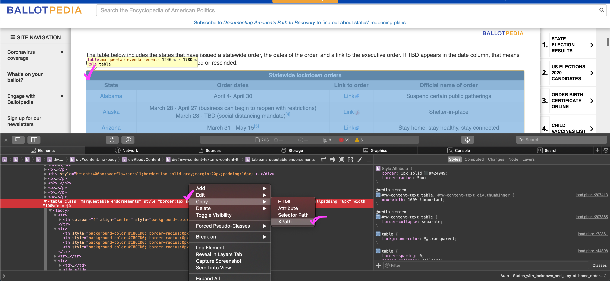
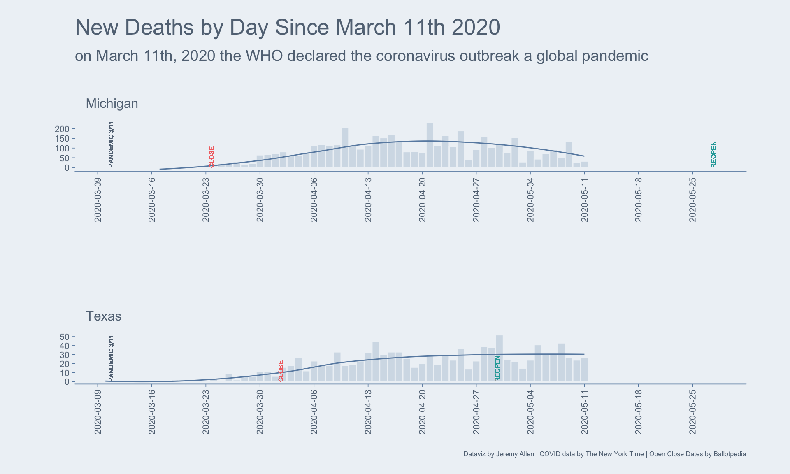

Write a function to scrape an online table, then use data.table to prep it for analysis. Use text from the table to add text annotations in a ggplot2 bar plot.
The problem: add date annotations to a bar graph of COVID-19 deaths, but those dates are in an online table, and we have to join those dates onto another data set.
We will use the rvest package to scrape a table from the web, then the stringr and data.table packages to clean it up and prep it for use in ggplot2.
The dates table will come from Ballotpedia
The COVID-19 deaths data will come from The New York Times
library(rvest)
library(stringr)
library(ggplot2)
library(data.table)
# define a function that can scrape a table from the web
get_html_table <- function(url, xpath, header = NA) {
url %>%
read_html() %>% # download page source
html_nodes(xpath = xpath) %>%
html_table(header = header) %>% # extract html table
.[[1]] %>% # get dataframe from list
as.data.table()
}
# set variables for url and xpath
# spliting the url here only for printing-width purposes on the blog
half1 <- "https://ballotpedia.org/States_with_lockdown_and_stay-at-home_orders"
half2 <- "_in_response_to_the_coronavirus_(COVID-19)_pandemic,_2020"
my_url <- paste0(half1, half2)
my_xpath <- '//*[@id="mw-content-text"]/table[1]'
# get the table
stay_at_home_table <- get_html_table(
url = my_url,
xpath = my_xpath,
header = FALSE
)To get the XPath for the table, go to the site, right-click anywhere on the table and select Inspect Element. You should then see the table in the html. Right-click the table in the html and select Copy, then XPath. I’m on a Mac in Safari, so this may look a little different if you are on Linux or Windows or other browsers.

Row 2 actually has the column names we want.
# extract row 2 values as a vector for use as column names
col_names <- stay_at_home_table[2, paste(.SD)] %>%
str_to_lower() %>%
str_replace_all(" ", "_")
# keep rows 3 through the end, set new column names, drop link column
stay_at_home_table <- stay_at_home_table[3:.N]
setnames(stay_at_home_table, col_names)
stay_at_home_table[, link_to_order := NULL]
stay_at_home_table[1]
state order_dates official_name_of_order
1: Alabama April 4- April 30 Suspend certain public gatheringsWe need two date columns, one for the start dates and another column for the end dates. Unfortunately, the table authors combine this data in a single column. We will split the existing date column into two using tstrsplit() from the data.table package. First, we will remove the citations from the dates, then split the date column into two. We finish up by handling the various types of missing data we find.
# clean clean clean
stay_at_home_table[ # remove citations
, order_dates := str_remove_all(order_dates, "\\[..?\\]")
][ # fix Alaska dates
state == "Alaska", order_dates := "March 28 - TBD"
][ # split date column into two columns
, c("start", "end") := tstrsplit(order_dates, "-", fixed = TRUE)
][ # trim white space from both columns
, c("start", "end") := lapply(.SD, str_trim), .SDcols = c("start", "end")
][ # drop the original date column
, order_dates := NULL
][ # replace none and tbd with NA
, c("start", "end") := lapply(.SD, function(x) fifelse(x %in% c("None", "TBD"), NA_character_, x))
, .SDcols = c("start", "end")
][ # in other column replace NA string with word None
official_name_of_order == "N/A", official_name_of_order := "None"
][ # add year to dates so we can convert them
, c("start", "end") := lapply(.SD, function(x) fifelse(!is.na(x), paste(x, "2020"), x)),
, .SDcols = c("start", "end")
][# then convert all to proper date class
, c("start", "end") := lapply(.SD, anytime::anydate), .SDcols = c("start", "end")
]
stay_at_home_table[1]
state official_name_of_order start end
1: Alabama Suspend certain public gatherings 2020-04-04 2020-04-30Get the COVID-19 data using the fast fread() function from data.table, and also sum up the total cases and deaths and get the date range of the data.
# get state data from The New York Times github
states <- fread(
input = "https://raw.githubusercontent.com/nytimes/covid-19-data/master/us-states.csv",
colClasses = c(date = 'IDate'),
key = c('state', 'date')
)
# get national data from The New York Times github
us <- fread(
input = "https://raw.githubusercontent.com/nytimes/covid-19-data/master/us.csv",
colClasses = c(date = 'IDate'),
key = 'date'
)
# total cases in the US
us_cases <- us[, last(cases)] %>%
formatC(digits = 0, format = "d", big.mark = ",")
# total deaths in the US
us_deaths <- us[, last(deaths)] %>%
formatC(digits = 0, format = "d", big.mark = ",")
# date range of the data
date_range <- states[, range(unique(date))]
names(date_range) <- c("first", "last")Build our data for the plot. We’ll make 7-day rolling averages for cases and deaths. The rolling averages will smooth over reporting inconsistencies, for example, when a hospital or county may report all weekend deaths on a Monday. Then we will join the state’s closing and reopening dates onto our COVID counts for each state.
plot_dat <- states[
, `:=`( # get new cases and deaths per day by subtracting previous day (lag)
new_cases = cases - shift(cases, type = "lag", n = 1L),
new_deaths = deaths -shift(deaths, type = "lag", n = 1L)
)
, by = state
][ # rolling avergaes for new cases and new deaths by state
, `:=`(
nc_avg = frollmean(new_cases, 7L, align = "right"),
nd_avg = frollmean(new_deaths, 7L, align = "right")
)
, by = state
][ # round them all up using ceiling
, c("nc_avg", "nd_avg") := lapply(.SD, ceiling), .SDcols = c("nc_avg", "nd_avg")
][ # join the closing and reopening dates
stay_at_home_table, on = "state"
][
, plot_label_end := "REOPEN"
][
, plot_label_start := "CLOSE"
]Plotting all the data for each state would be too much for this blog post. Instead, I’ll pick two states and plot their daily death counts, 7-day rolling averages, and closing and opening dates.
# colors
main_blue <- "#abbfd3"
accent_light <- "#eef2f6"
accent_dark <- "#698cb0"
grey_dark <- "#627384"
restriction_red <- "#f47171"
reopen_green <- "#24a8a8"
# max date for x axis
max_plot_date <- max(
Sys.Date(),
plot_dat[state %chin% c("Texas", "Michigan"),
max(end, na.rm = TRUE)]
)
plot_dat[state %chin% c("Texas", "Michigan"), ] %>%
ggplot(aes(x = date, y = new_deaths)) +
geom_bar(stat = "identity",
fill = main_blue,
color = accent_light,
width = 1,
alpha = .4) +
geom_smooth(aes(x = date, y = nd_avg),
method = "loess",
color = accent_dark,
se = FALSE,
size = .5) +
geom_text(aes(x = as.Date("2020-03-11"), y = 0.01,
label = "PANDEMIC 3/11"),
size = 2, angle = 90, vjust = 0, hjust = 0, color = grey_dark) +
geom_text(aes(x = start, y = 0.01, label = plot_label_start),
size = 2, angle = 90, vjust = 0, hjust = 0, color = restriction_red) +
geom_text(aes(x = end, y = 0.01, label = plot_label_end),
size = 2, angle = 90, vjust = 0, hjust = 0, color = reopen_green) +
scale_x_date(limits = c(as.Date("2020-03-10"), max_plot_date), breaks = "1 week") +
facet_wrap(~state, scales = "free",
ncol = 1) +
labs(y = "",
x = "",
title = "New Deaths by Day Since March 11th 2020",
subtitle = "on March 11th, 2020 the WHO declared the coronavirus outbreak a global pandemic",
caption = "Dataviz by Jeremy Allen | COVID data by The New York Time | Open Close Dates by Ballotpedia") +
theme(
axis.ticks = element_line(color = accent_dark, size = .3),
axis.line.x = element_line(color = accent_dark, size = .3),
axis.text = element_text(color = "#627384", size = 8),
axis.text.x = element_text(angle = 90, vjust = .5),
axis.title = element_text(color = "#627384", size = 8),
panel.background = element_rect(fill = accent_light, color = accent_light),
plot.background = element_rect(fill = accent_light, color = accent_light),
panel.grid = element_blank(),
strip.background = element_rect(fill = accent_light, color = accent_light),
strip.text = element_text(color = "#627384", size = 12, hjust = 0,
margin = unit(c(10,10,10,10), "pt")),
plot.title = element_text(color = "#627384", size = 20,
margin = unit(c(2,10,5,0), "pt")),
plot.subtitle = element_text(color = "#627384", size = 14,
margin = unit(c(5,10,20,0), "pt")),
plot.caption = element_text(color = "#627384", size = 6),
plot.margin = unit(c(15,40,15,40), "pt"),
panel.spacing = unit(70, "pt")
)
Text and figures are licensed under Creative Commons Attribution CC BY 4.0. The figures that have been reused from other sources don't fall under this license and can be recognized by a note in their caption: "Figure from ...".
For attribution, please cite this work as
Allen (2020, May 12). jeremydata: Scrape, Clean, Join, Plot. Retrieved from https://jeremydata.com/posts/2020-05-12-scrape-and-clean-an-online-table/
BibTeX citation
@misc{allen2020scrape,,
author = {Allen, Jeremy},
title = {jeremydata: Scrape, Clean, Join, Plot},
url = {https://jeremydata.com/posts/2020-05-12-scrape-and-clean-an-online-table/},
year = {2020}
}